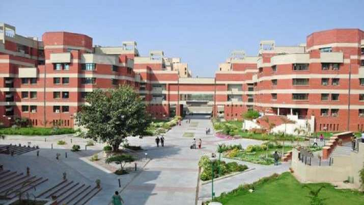

Contributed by -
Akshat Kumar
Top 5 Engineering colleges in Delhi
-
Guru Gobind Singh Indraprashtha Univerity
The Univerity school of Information communiaction and technology is the department under the GGSIPU is providing the B.Tech courses in the following branches:
- B.Tech Computer Science & Engineering
- B.Tech Information technology
- B.Tech Electronics and Communication technology
USICT - The University School of Information and Communication Technology aims to commence a knowledge center committed to excellence in learning and training of information and communication technology. We are committed to provide world class education to the students. Our students are trained through certified trainers and subject experts. In this way students can achieve direct placement by the corporate sector
University School of Information Communication and Technology was founded in the year 1999 and also known as USICT IPU University New Delhi. It is a public engineering college that invites admission in Btech courses on the basis of JEE Main rank. It is counted as one of the prestigious engineering colleges in India.
USICT is NAAC A graded by the authorities and approved by the UGC. It is affiliated by the Guru Gobind Singh Indraprastha University New Delhi. The University School of Engineering & Technology is merged with University School of Information & Technology in the year 2016. The world-class infrastructure of the college offers students a learning opportunity. Faculties are experienced and knowledgeable in their subjects. -
Indian Institute of Technology(IIT) Delhi

Indian Institute of Technology Delhi (IIT Delhi) is a public technical university located in Hauz Khas in South Delhi, Delhi, India. It is one of the oldest Indian Institutes of Technology in India.
Established in 1961, was formally inaugurated in August 1961 by Prof. Humayun Kabir, Minister of Scientific Research & Cultural Affairs. First admissions were made in 1961.[5] The current campus has an area of 320 acres (or 1.3 km2) and is bounded by the Sri Aurobindo Marg on the east, the Jawaharlal Nehru University Complex on the west, the National Council of Educational Research and Training on the south, and the New Ring Road on the north, and flanked by Qutub Minar and the Hauz Khas monuments.
The institute was later decreed in the Institutes of National Importance under the Institutes of Technology Amendment Act, 1963, and accorded the status of a full University with powers to decide its academic policy, conduct its examinations, and award its degrees.
In 2018 IIT Delhi was also given the status of Institution of Eminence (IoE) by the Government of India which granted almost-full autonomy. According to a government statement issued earlier, these IoEs will have greater autonomy in that they will be able to admit foreign students up to 30% of the admitted students and recruit foreign faculty up to 25% of the faculty strength with enhanced research funding. -
Netaji Subash University of Delhi

Netaji Subhas University of Technology (NSUT), formerly known as Netaji Subhas Institute of Technology (NSIT) is a state-level university. NSIT was established in 1983 and in 2018 the institute was given university status, hence making it a non-affiliating university. Earlier it was affiliated with the University of Delhi. NSUT is ranked 88 for BTech by NIRF 2021. NSIT Delhi is accredited by NAAC and is approved by AICTE and UGC. NSIT consists of 13 departments offering 11 UG, 15 PG, and 11 PhD courses in various streams of Computer Engineering, Electronic Engineering, etc. The top companies taking part in the NSIT placements drive are Accenture, Amazon, Birlasoft, Honda, HCL, Honda, Microsoft, Birla, Honeywell, Google, IBM, and many more.
NSUT (Netaji Subhas University of Technology, Delhi), formerly known as the NSIT Delhi is one of the popular technological universities in India. The university is recognized by several prestigious ranking agencies of India including the NIRF Engineering Rankings 2021 in which the institute has secured the 88th position. The flagship program of the institute is the B.Tech program in the Computer and Science Engineering branch, admission to which is offered on the basis of JEE Main exam score followed by the JAC Delhi counseling and seat allotment process. The expected cutoff for the B.Tech CSE in AI program is 2065 while for the B.Tech CSE in Data Science is 4168 for the year 2021. NSIT Delhi charges about INR 1,66,000 for the 1st year of the B.Tech program. Graduates from the institute can easily bag the job offers ranging from INR 4 LPA to INR 1.25 Cr., at various national and international companies, MNCs, Software Firms, and others. Some of the major recruiters of NSIT Delhi include Amazon India, KPMG, Maruti Suzuki, Reliance Jio, and many others. -
Delhi Technological Univerity

Delhi Technological University (DTU), formerly known as the Delhi College of Engineering (DCE) is a state university in New Delhi, India. It was established in 1941 as Delhi Polytechnic. In 1952, it started giving degrees after being affiliated with the University of Delhi. The institute has been under the Government of Delhi since 1963 and was affiliated with the University of Delhi from 1952 to 2009. In 2009, the college was given university status, thus changing its name to Delhi Technological University.
Delhi Technological University (Delhi College of Engineering) operated from the Kashmiri Gate campus in the heart of Old Delhi until 1989, when construction began at the New Campus at Bawana Road in May. Moving of operations from Kashmiri Gate to the new 164 acres at Bawana Road began in 1995, and the new campus formally started classes for all four years of study starting 1999.
The new DTU campus is well connected by road. Facilities include a library, a computer centre, a sports complex, eight boys' hostels, six girls' hostels, and a married couples' hostel. The campus has residential facilities for faculty and staff. The campus has an auditorium and two open-air theatres out of which one is called the OAT (Open-air Theatre) and the other is called the Mini OAT (Mini open-air theatre).
In 2010, the DTU came up with a plan to make the campus environment friendly which included, barring entry of vehicles in the campus, generation of one-third of the energy from alternative sources and on designing new buildings as per "green architecture concept".
DTU has opened up a campus in Vivek Vihar, East Delhi named "University School of Management and Entrepreneurship (USME)" in 2017. The new campus offers management courses for graduation and post graduation. Currently, the USME, east campus of DTU offers courses in MBA, MBA business analytics, BBA, and BA in Economics. USME offers 60 seats for MBA students and 30 seats for MBA business analytics program. Admission to MBA is decided by CAT score and further by rigorous group discussion and personal interviews. Moreover, there are 120 seats for BBA and BA (hons) Economics each. The admission to the courses is merit-based. -
IIIT Delhi

IIIT Delhi is a state-level university, which was established in the year 2008. The institute has recently been ranked 63 among the top engineering colleges in India by NIRF 2021. At present, IIIT Delhi offers UG, PG, Ph.D., and PG Diploma courses.
B.Tech in Computer Science and Engineering (CSE) is the flagship course of IIIT Delhi. Admissions to the course are done on the basis of JEE Main scores and counselling by the Joint Admission Committee (JAC). The JEE Main cutoff for CSE at IIIT Delhi ranges from 9446-10285 for the general category.
IIIT Delhi offers excellent placement opportunities to its students. In the recent placement drive of 2021, the institute recorded 90.18% placements. The highest package offered was INR 50 LPA while the average package was 16.14 LPA. Goldman Sachs, Morgan Stanley, Samsung, Sandisk, Pwc, and Deloitte are some of the top recruiters at IIIT Delhi.